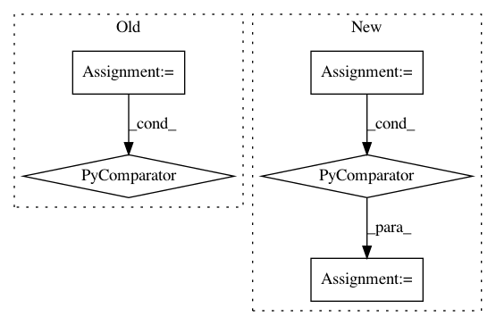

1bf94047a37fc075277f3eaa53f3656b73fa7c2f,softlearning/replay_pools/simple_replay_pool.py,SimpleReplayPool,batch_by_indices,#SimpleReplayPool#Any#Any#Any#,91
Before Change
if field_name_filter is not None:
batch = {
field_name: values
for field_name, values in batch.items()
if field_name_filter(field_name)
}
After Change
if field_name_filter is not None:
filtered_fields = self.filter_fields(
batch.keys(), field_name_filter)
batch = {
field_name: batch[field_name]
for field_name in filtered_fields
}
return batch
def terminate_episode(self):
In pattern: SUPERPATTERN
Frequency: 3
Non-data size: 5
Instances
Project Name: rail-berkeley/softlearning
Commit Name: 1bf94047a37fc075277f3eaa53f3656b73fa7c2f
Time: 2018-12-21
Author: hartikainen@berkeley.edu
File Name: softlearning/replay_pools/simple_replay_pool.py
Class Name: SimpleReplayPool
Method Name: batch_by_indices
Project Name: rail-berkeley/softlearning
Commit Name: e2838611c1e3e1d8d36fb50eb6c0e3e4c172004a
Time: 2018-09-09
Author: kristian.hartikainen@gmail.com
File Name: softlearning/algorithms/sac.py
Class Name: SAC
Method Name: _init_target_ops
Project Name: apple/coremltools
Commit Name: 6579941f769413ed00f5330ad45c3c5f44c52927
Time: 2019-09-16
Author: awadhwa@apple.com
File Name: coremltools/converters/nnssa/coreml/graph_pass/op_fusions.py
Class Name:
Method Name: _is_NHWC